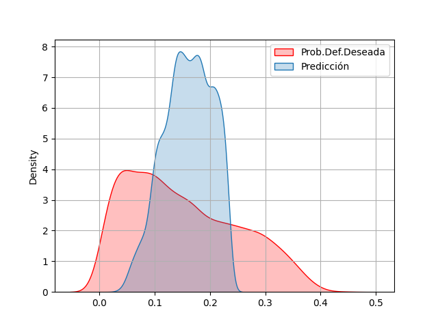
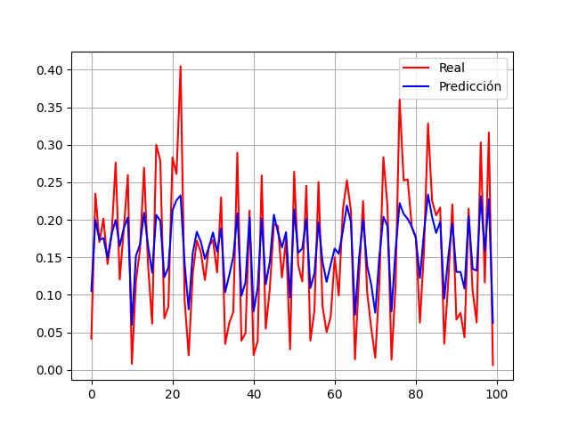

Estos gráficos muestran la comparación entre los valores reales y los valores predichos.
Este gráfico corresponde al segmento inicial de la serie temporal.

Este muestra una ventana intermedia de la predicción.
En este gráfico se observa el comportamiento final de la serie.
